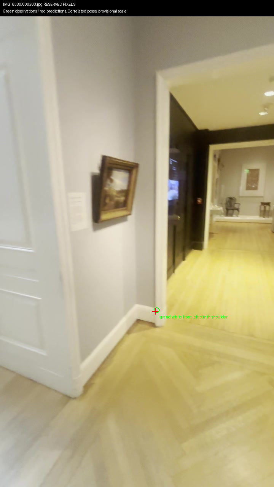
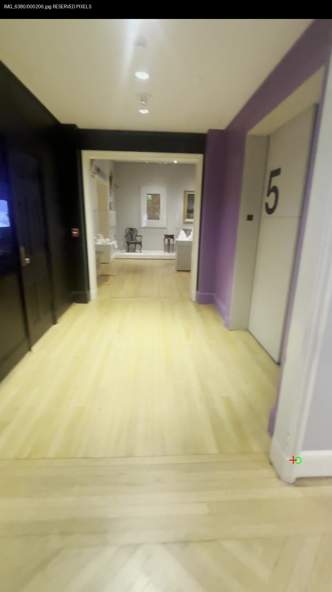
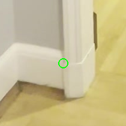
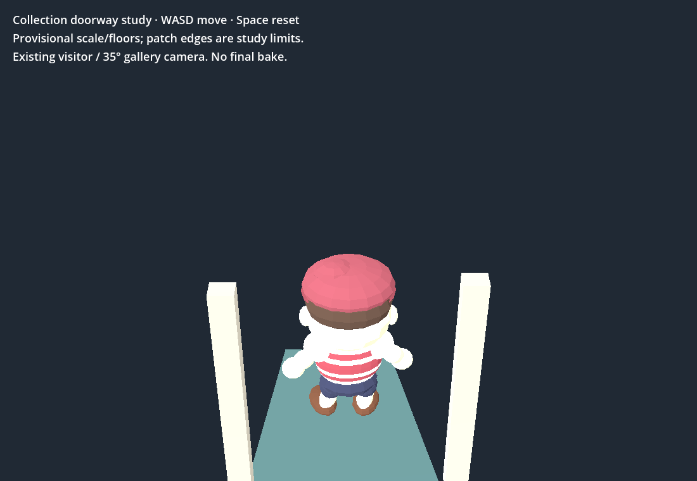
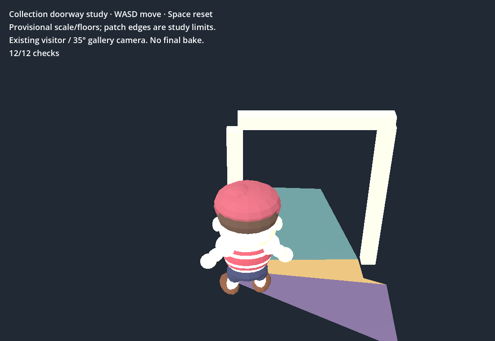

Two registered references violate the claimed 0.2s holdout gap. Historical results preserved. Conservative split-point count: 44/69 after excluding the two affected queries; fresh model still required.
| Query | Reference | Actual source separation |
|---|---|---|
| 506 | exit6fps 18 | 0.167s · rejected |
| 516 | exit6fps 48 | 0.166s · rejected |
Left plinth shoulder: 4.677px reserved error. Opposite shoulder: 10.118px, rejected. No room or collision extension. These same-video pixels do not prove independent survey accuracy.
Existing bounded study passes 24 native/Chrome checks and real keyboard round trip. Shell has four previous failures. No production integration or 3D Viewer changes; this tick $0.
Decoded timestamp audit · 473-image allowlist for next run · Guards preserve historical reports · Hashes and provenance · Play existing bounded doorway study (WASD)




